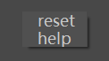
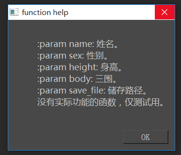

父类：
属性：
方法：
文档
Message message
用来显示函数帮助的组件Message(""function help")。
Function fn
参数选项组件对应的函数。
dict kwargs
由参数名和参数值构成的键值对.
dict kwargs = Option.kwargs 查询参数选项组件所代表的参数。
Option.kwargs = dict kwargs 设置参数选项组件所代表的参数。
AttributeDict widgets
由参数名和参数组件键值对AttributeDict(arg=QWidget widget,……)
右键菜单。
点击reset后执行reset方法。
点击help后执行help方法。
效果如下：

str html
函数文档对应网页文件的路径。
str __init__(self, function fn)
参数 fn: 参数选项组件对应的函数。
str __call__(self, dict **kwargs)
kwargs：由参数名和参数组件键值对{str arg: QWidget widget……}
参数名下划线会转化成空格、首字母大小、后缀加：。
例：point_on_curve>Point On Curve:
以 参数名:参数组件 的形式竖向添加到选项组建。
添加顺序为原函数参数顺数。
可适当改变原函数的参数名和参数顺序来让界面好看一些。
效果如下：

str __repr__(self)
返回：QFn.window.Option(fn)
右击时，在鼠标位置显示menu。
dict dump(self)
将参数组建转化为可写入yaml的通用数据。
返回：由参数名和可通过eval生成参数组件的字符串构成的键值对{str arg: str widget……}
load(self, dict data)
参数 data: 由参数名和可通过eval生成参数组件的字符串构成的键值对{str arg: str widget……}。
将data转化为参数选项组建。
reset(self)
将参数组建的值设置成函数默认值。
help(self)
若设置了html，则打开网页。该功能暂仅支持本地html文件。
若未设置html，则显示函数帮助。

案例
from QFn import window, fn, args
option = window.Option(fn.man)
print option
print option.fn
option.show()
option(name=args.String(),
sex=args.Enum("man", "woman"),
body=args.FloatArray(["bust", "waist", "hip"]),
save_file=args.Path("txt"),
error_arg=args.Path("txt"))
#根据参数名跟参数类型添加参数组件。
option.widgets.sex.arg = "woman"
option.widgets["body"].arg = [80.0, 56.0, 81.0]
#可同Option.arg, Option[arg]两种方式查询参数组建。
new_option = window.Option(fn.more)
new_option.show()
new_option.load(option.dump())
#可通过dump与load来进行窗口与参数组建之间的转换。
new_option.kwargs = option.kwargs
#通过kwargs查询设置参数